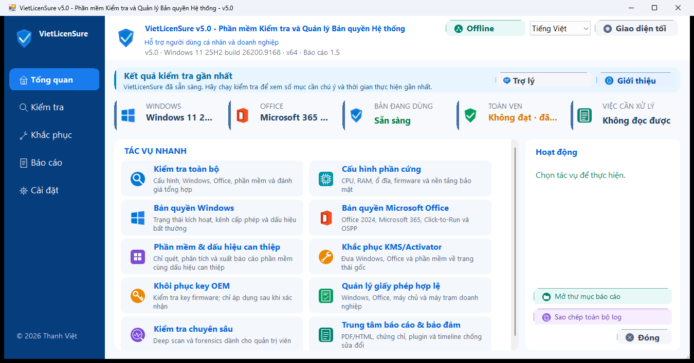

🛡️
Nguồn gốc fail-closed
Bản bị sửa hoặc không khớp provenance bị khóa cập nhật và thao tác thay đổi hệ thống.
An tâm sử dụng.
VietLicenSure — Phần mềm kiểm tra và quản lý bản quyền hệ thống hỗ trợ người dùng cá nhân, kỹ thuật viên, nhân viên IT và doanh nghiệp kiểm tra Windows, Microsoft Office/Microsoft 365, phần mềm đã cài và thông tin hệ thống. VietLicenSure gom kết quả về một nơi, giải thích bằng chứng, hỗ trợ kiểm kê và tạo báo cáo đã che định danh — thay vì buộc người dùng tự ghép nhiều lệnh rời rạc.
VietLicenSure tách trạng thái bản quyền khỏi lỗi đọc dữ liệu, phân biệt phần mềm đã cài với tệp còn sót và giữ bằng chứng chưa đủ ở mức “Chưa xác minh”. Công cụ không coi mọi dấu hiệu lạ là vi phạm và không dùng mã thoát đơn lẻ để báo thành công.

Bản bị sửa hoặc không khớp provenance bị khóa cập nhật và thao tác thay đổi hệ thống.
Quick, Standard và Deep có ngân sách rõ để cân bằng độ phủ và tài nguyên máy.
Serial, UUID, Processor ID và Asset Tag được che theo mặc định.
Thay đổi được giới hạn theo mục, có bản sao bảo vệ và hậu kiểm.
Quy tắc nhận diện và tri thức trợ lý có schema, chữ ký CMS và signer ghim.
Có CLI, fleet export, protocol doanh nghiệp và script triển khai tập trung.
| Nhóm | v4.8 | v4.9 | v5.0 |
|---|---|---|---|
| Nền tảng | Baseline kiến trúc, Offline/reporting | Siết nguồn gốc và catalog | Hợp đồng mô-đun, dashboard thích ứng, ManagedSigned |
| Chuỗi phát hành | Hash và hardening nền | Provenance/chính sách mã nguồn | Tập tệp đóng, 4 CMS, cert công bố, Authenticode, SBOM |
| Quét phần mềm | Windows/Office và inventory nền | Catalog mở rộng, bằng chứng thận trọng | Quick/Standard/Deep, budget và trust gate |
| Khắc phục | Backup và luồng an toàn | Evidence threshold chặt hơn | Preview, scope-lock, UAC theo nhu cầu, hậu kiểm/rollback |
| Trải nghiệm | Giao diện chức năng | Bổ sung trợ lý/chính sách | Dark/light, DPI, Result Center và tài liệu trong ứng dụng |
| Nhóm công cụ | Mục tiêu | Điểm VietLicenSure tập trung |
|---|---|---|
| Công cụ kiểm kê tài sản | Liệt kê phần cứng/phần mềm quy mô lớn | Thêm ngữ cảnh license, bằng chứng, hậu kiểm và báo cáo riêng tư trên endpoint Windows. |
| Công cụ kích hoạt | Thay đổi trạng thái kích hoạt | Không thay thế giấy phép; ưu tiên kiểm tra, bảo toàn license hợp lệ và chỉ dùng luồng chính thức. |
| Antivirus/EDR | Phát hiện và ngăn mã độc | Không thay thế AV/EDR; chỉ bổ sung kiểm tra cấu hình/license và dấu vết can thiệp có giới hạn. |
| VietLicenSure | Assurance cho Windows, Office và phần mềm | Gộp inventory, provenance, giải thích bằng chứng, backup, xử lý giới hạn và hậu kiểm. |
Hướng dẫn từng bước
Tải, xác minh, chạy, đọc và xử lý kết quả.
Checksum, CMS và Authenticode
Cách phân biệt lỗi chữ ký thật với lỗi line ending.
Release notes v5.0
Phiên bản, tài sản tải và ghi chú kênh phát hành.
Known limitations
Những điều công cụ chưa hoặc không thể bảo đảm.
Chính sách từ v4.9
Phạm vi sử dụng và quy trình xin quyền truy cập.
Dự án trước đây mang tên Tool Kiểm Tra — Công cụ kiểm tra máy và bản quyền phần mềm. Khi được mở rộng từ kiểm tra đơn lẻ sang kiểm kê, phân tích bằng chứng, báo cáo và hỗ trợ quản lý thiết bị, dự án đổi tên thành VietLicenSure — Phần mềm kiểm tra và quản lý bản quyền hệ thống. v5.0 là bản nâng cấp trực tiếp tiếp theo của v4.9.
Tác giả là một nhân viên văn phòng có niềm đam mê với lập trình. VietLicenSure ra đời từ mong muốn thay nhiều lệnh và công cụ rời rạc bằng một quy trình dễ sử dụng, giúp mọi người giảm thời gian kiểm tra máy tính và giúp bộ phận IT, doanh nghiệp kiểm kê rõ ràng hơn.
Khi người dùng bật Online, VietLicenSure tự kiểm tra bản v5.0 mới nhất. Updater chỉ thay tệp sau khi người dùng chấp thuận và các bước xác minh CMS, SHA-256, Authenticode cùng signer đã ghim đều đạt.
v5.0 đang ở kênh ManagedSigned/Pilot, không gắn nhãn Public Stable. Kiểm thử cục bộ không được dùng thay cho ma trận Windows 10/11 sạch và duyệt độc lập.
Số liệu tĩnh được ghi nhận từ kho GitHub công khai ngày 08/09/2026 và có thể thay đổi.
Chuỗi build/hash/CMS, provenance, SBOM, signer pinning, dashboard v5 và tài liệu song ngữ.
Verifier gói độc lập, chứng thư công bố, log kiểm thử, UX người mới và hồ sơ threat model.
Ma trận Windows 10/11 sạch, user/admin, Offline, có/không Office, rollback và duyệt độc lập trước Public Stable.
Bản thực thi chính thức tiếp tục miễn phí cho mục đích hợp pháp. Sau các trường hợp sao chép, đổi tên hoặc đóng gói lại khi chưa được phép, mã nguồn không còn được công khai theo giấy phép nguồn mở. Quyền xem mã chỉ có hiệu lực trong phạm vi, thời hạn và điều kiện được tác giả chấp thuận bằng văn bản; không tự cấp quyền sao chép, phân phối, tạo bản phái sinh hay đổi thương hiệu.
Đọc chính sách đầy đủ. Hiện chưa có ngày cam kết mở lại mã nguồn.
Mở GitHub Issues và dùng mẫu có sẵn. Chỉ gửi support bundle đã che định danh.
Mở GitHub Discussions cho câu hỏi sử dụng và ý tưởng công khai.
Mở Private Security Advisory; không đăng mã khai thác hoặc bí mật lên Issues.
Dùng kênh này cho yêu cầu riêng tư hoặc truy cập mã nguồn: .
Địa chỉ chỉ được ghép sau khi bạn bấm để giảm thu thập tự động.
Không. Bằng chứng chưa đủ được giữ ở trạng thái “Chưa xác minh/kiểm tra thủ công” và không đủ điều kiện tự động làm sạch.
Không. Online chỉ cho các kết nối cố định được người dùng đồng ý như cập nhật VietLicenSure/catalog/tri thức hoặc LAN được cấp phép; runtime telemetry bị tắt.
Vì mã thoát thành công chưa đủ. VietLicenSure phải quét lại và có thể trả về thử lại, bị policy chặn hoặc cần Repair/cài lại chính thức.
Không. Đây là kết quả kỹ thuật trong phạm vi bằng chứng đã kiểm tra. Quyền sở hữu phải đối chiếu tài khoản, hóa đơn, hợp đồng và thông tin của hãng.